压缩列表(ziplist)是列表键和哈希键的底层实现之一。
1. 压缩列表的构成
压缩列表是Redis为了节约内存而开发的，是由一系列特殊编码的连续内存块组成的顺序性数据结构。一个压缩列表可以包含任意多个节点,每个节点可以保存一个字节数组或者一个整数值。
当一个哈希键只包含少量key-value对，且每个key-value对的key和value要么是小整数，要么是较短字符串，那么redis就会使用ziplist作为哈希键的底层实现。
2. ziplist的实现：
ziplist的内存布局如下所示：
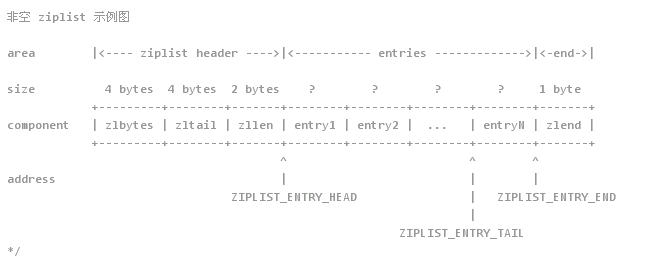
zlbytes：4字节，记录整个压缩列表占用的内存字节数：在对压缩列表进行内存重分配，或者计算zlend的位置时使用zltail：4字节，记录压缩列表尾部节点距离起始地址的偏移量：通过这个偏移量，程序无需遍历整个压缩列表就可以确定表尾节点的地址zllen：2字节，记录压缩列表包含的节点数量entry：不定，列表中的每个节点,节点的长度由节点保存的内存决定zlend：1字节，特殊值0xFF，标记压缩列表的结束
因此通过下面的宏定义可以非常方便的求出各个字段的值
1 | #define ZIPLIST_BYTES(zl) (*((uint32_t*)(zl))) |
一个简单的ziplist示意图如下：
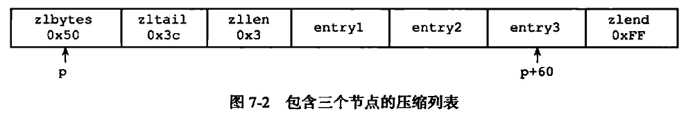
- 列表zlbytes属性的值为0x50（十进制80），表示压缩列表的总长为80字节。
- 列表zltail属性的值为0x3c（十进制60），这表示如果我们有一个指向压缩列表起始地址的指针p，那么只要用指针p加上偏移量60，就可以计算出表尾节点entry3的地址。
- 列表zllen属性的值为0x3（十进制3），表示压缩列表包含三个节点。
3. 压缩列表节点的构成
每个压缩列表节点可以保存一个字节数组或者一个整数值。
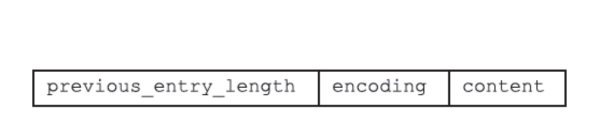
3.1 previous_entry_length
节点的previous_entry_length属性以字节为单位，记录了压缩列表中前一个节点的长度。previous_entry_length属性的长度可以是1字节或者5字节：
- 如果前一节点的长度小于254字节，那么previous_entry_length属性的长度为1字节：前一节点的长度就保存在这一个字节里面。
- 如果前一节点的长度大于等于254字节，那么previous_entry_length属性的长度为5字节：其中属性的第一字节会被设置为0xFE（十进制值254），而之后的四个字节则用于保存前一节点的长度。
图7-5展示了一个包含一字节长previous_entry_length属性的压缩列表节点，属性的值为0x05，表示前一节点的长度为5字节。
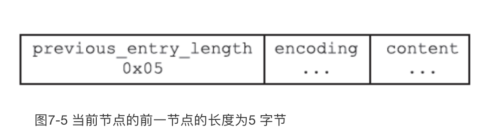
图7-6展示了一个包含五字节长previous_entry_length属性的压缩节点，属性的值为0xFE00002766，其中值的最高位字节0xFE表示这是一个五字节长的previous_entry_length属性，而之后的四字节0x00002766（十进制值10086）才是前一节点的实际长度。
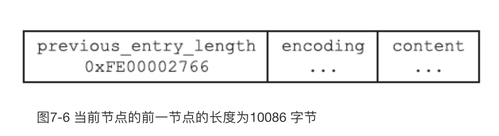
因为节点的previous_entry_length属性记录了前一个节点的长度，所以程序可以通过指针运算，根据当前节点的起始地址来计算出前一个节点的起始地址。
举个例子，如果我们有一个指向当前节点起始地址的指针c，那么我们只要用指针c减去当前节点previous_entry_length属性的值，就可以得出一个指向前一个节点起始地址的指针p，如图7-7所示。
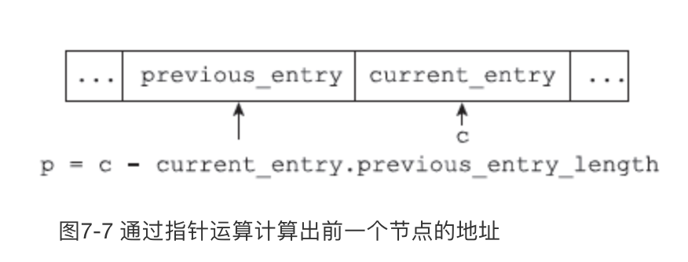
压缩列表的从表尾向表头遍历操作就是使用这一原理实现的，只要我们拥有了一个指向某个节点起始地址的指针，那么通过这个指针以及这个节点的previous_entry_length属性，程序就可以一直向前一个节点回溯，最终到达压缩列表的表头节点。
图7-8展示了一个从表尾节点向表头节点进行遍历的完整过程：
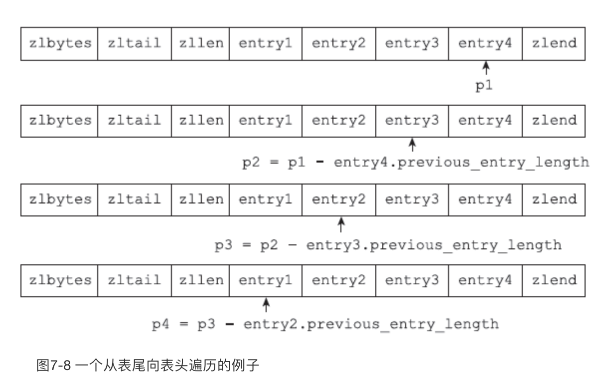
- 首先，我们拥有指向压缩列表表尾节点entry4起始地址的指针p1（指向表尾节点的指针可以通过指向压缩列表起始地址的指针加上zltail属性的值得出）；
- 通过用p1减去entry4节点previous_entry_length属性的值，我们得到一个指向entry4前一节点entry3起始地址的指针p2；
- 通过用p2减去entry3节点previous_entry_length属性的值，我们得到一个指向entry3前一节点entry2起始地址的指针p3；
- 通过用p3减去entry2节点previous_entry_length属性的值，我们得到一个指向entry2前一节点entry1起始地址的指针p4，entry1为压缩列表的表头节点；
- 最终，我们从表尾节点向表头节点遍历了整个列表。
3.2 encoding
节点的encoding属性记录了节点的content属性所保存数据的类型以及长度
- 一字节、两字节或者五字节长，值的最高位为00、01或者10的是字节数组编码：这种编码表示节点的content属性保存着字节数组，数组的长度由编码除去最高两位之后的其他位记录；
- 一字节长，值的最高位以11开头的是整数编码：这种编码表示节点的content属性保存着整数值，整数值的类型和长度由编码除去最高两位之后的其他位记录；
表7-2记录了所有可用的字节数组编码，而表7-3则记录了所有可用的整数编码。表格中的下划线“_”表示留空，而b、x等变量则代表实际的二进制数据，为了方便阅读，多个字节之间用空格隔开。
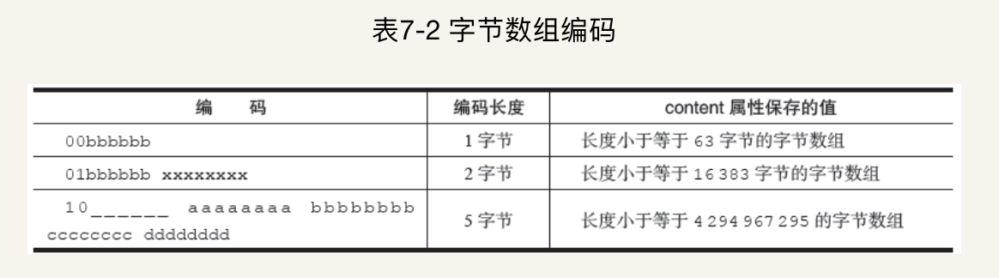
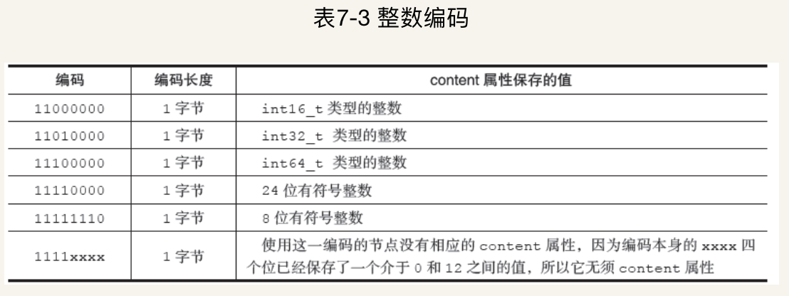
3.3 content
节点的content属性负责保存节点的值，节点值可以是一个字节数组或者整数，值的类型和长度由节点的encoding属性决定。
图7-9展示了一个保存字节数组的节点示例：
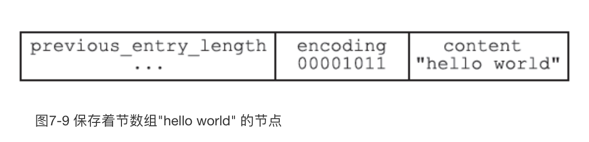
- 编码的最高两位00表示节点保存的是一个字节数组；
- 编码的后六位001011记录了字节数组的长度11；
- content属性保存着节点的值”hello world”。
图7-10展示了一个保存整数值的节点示例：
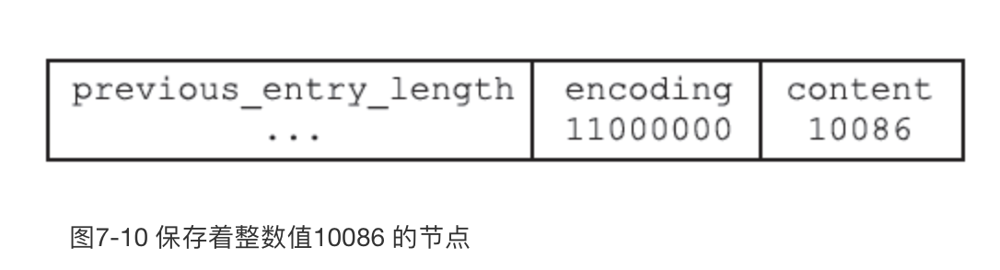
- 编码11000000表示节点保存的是一个int16_t类型的整数值；
- content属性保存着节点的值10086。
3.4. 连锁更新
前面说过，每个节点的previous_entry_length属性都记录了前一个节点的长度：
- 如果前一节点的长度小于254字节，那么previous_entry_length属性需要用1字节长的空间来保存这个长度值。
- 如果前一节点的长度大于等于254字节，那么previous_entry_length属性需要用5字节长的空间来保存这个长度值。
现在，考虑这样一种情况：在一个压缩列表中，有多个连续的、长度介于250字节到253字节之间的节点e1至eN，如图7-11所示。
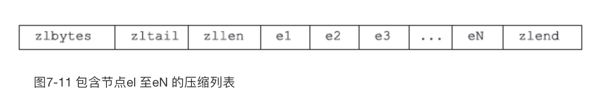
因为e1至eN的所有节点的长度都小于254字节，所以记录这些节点的长度只需要1字节长的previous_entry_length属性，换句话说，e1至eN的所有节点的previous_entry_length属性都是1字节长的。
这时，如果我们将一个长度大于等于254字节的新节点new设置为压缩列表的表头节点，那么new将成为e1的前置节点，如图7-12所示。
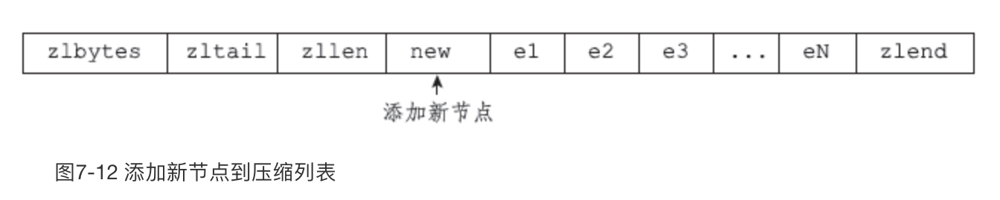
因为e1的previous_entry_length属性仅长1字节，它没办法保存新节点new的长度，所以程序将对压缩列表执行空间重分配操作，并将e1节点的previous_entry_length属性从原来的1字节长扩展为5字节长。
现在，麻烦的事情来了，e1原本的长度介于250字节至253字节之间，在为previous_entry_length属性新增四个字节的空间之后，e1的长度就变成了介于254字节至257字节之间，而这种长度使用1字节长的previous_entry_length属性是没办法保存的。
因此，为了让e2的previous_entry_length属性可以记录下e1的长度，程序需要再次对压缩列表执行空间重分配操作，并将e2节点的previous_entry_length属性从原来的1字节长扩展为5字节长。
正如扩展e1引发了对e2的扩展一样，扩展e2也会引发对e3的扩展，而扩展e3又会引发对e4的扩展……为了让每个节点的previous_entry_length属性都符合压缩列表对节点的要求，程序需要不断地对压缩列表执行空间重分配操作，直到eN为止。
Redis将这种在特殊情况下产生的连续多次空间扩展操作称之为“连锁更新”（cascade update），图7-13展示了这一过程。
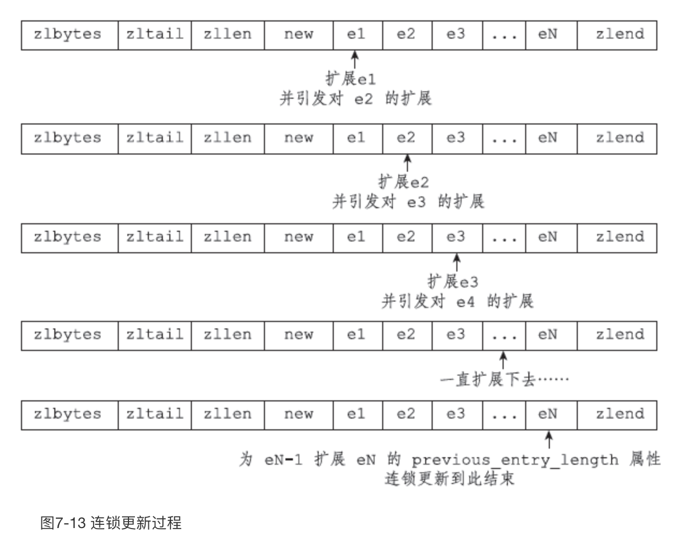
除了添加新节点可能会引发连锁更新之外，删除节点也可能会引发连锁更新。
考虑图7-14所示的压缩列表，如果e1至eN都是大小介于250字节至253字节的节点，big节点的长度大于等于254字节（需要5字节的previous_entry_length来保存），而small节点的长度小于254字节（只需要1字节的previous_entry_length来保存），那么当我们将small节点从压缩列表中删除之后，为了让e1的previous_entry_length属性可以记录big节点的长度，程序将扩展e1的空间，并由此引发之后的连锁更新。
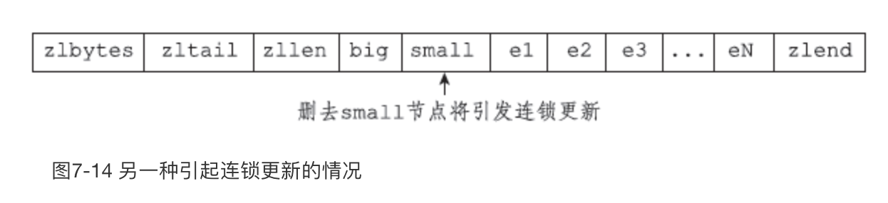
因为连锁更新在最坏情况下需要对压缩列表执行N次空间重分配操作，而每次空间重分配的最坏复杂度为O(N)，所以连锁更新的最坏复杂度为O(N2)。
要注意的是，尽管连锁更新的复杂度较高，但它真正造成性能问题的几率是很低的：
- 首先，压缩列表里要恰好有多个连续的、长度介于250字节至253字节之间的节点，连锁更新才有可能被引发，在实际中，这种情况并不多见；
- 其次，即使出现连锁更新，但只要被更新的节点数量不多，就不会对性能造成任何影响：比如说，对三五个节点进行连锁更新是绝对不会影响性能的；
因为以上原因，ziplistPush等命令的平均复杂度仅为O(N)，在实际中，我们可以放心地使用这些函数，而不必担心连锁更新会影响压缩列表的性能。